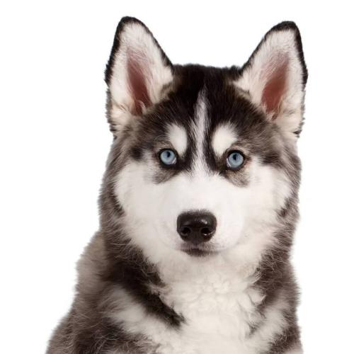

<div class="banner">
    <a href="#" class="prev">prev</a>
    <a href="#" class="next">next</a>
    
</div>
<h3>幽灵空白节点</h3>
<div></div>
<h3>替换元素的自己的尺寸</h3>
<video></video>

<select multiple>
    <option value="x">x</option>
    <option value="y">y</option>
    <option value="z">z</option>
</select>